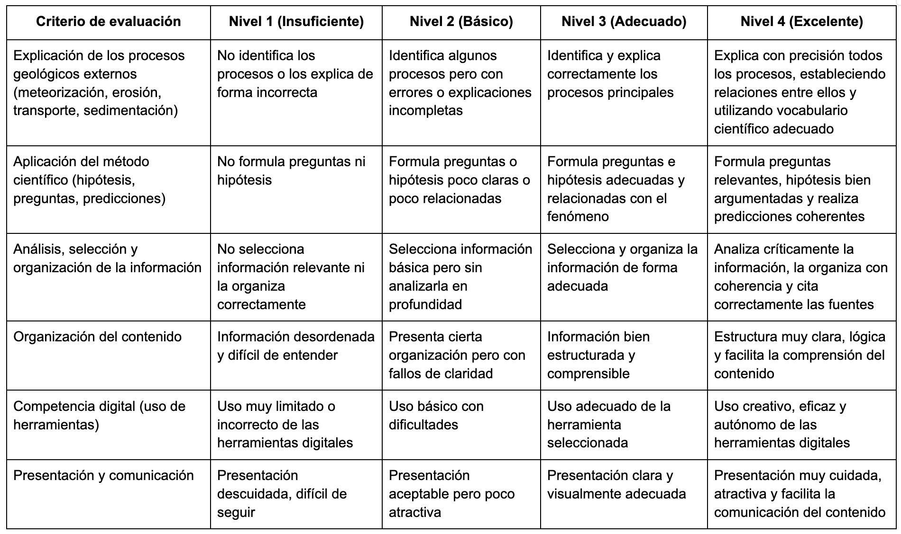
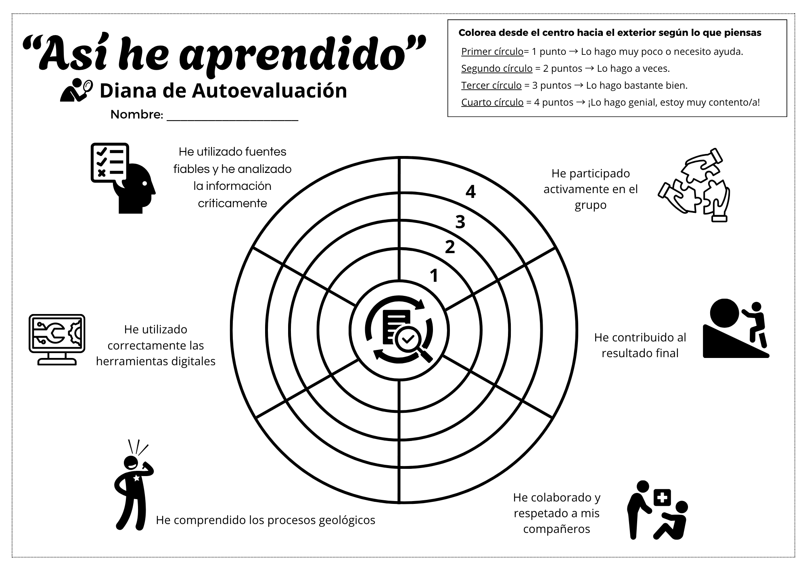
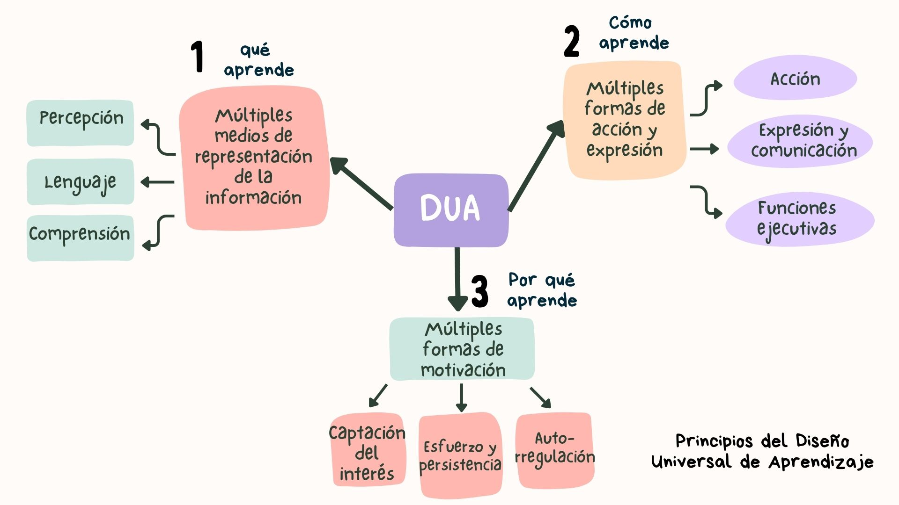

Diferentes instrumentos de evaluación
En este proyecto se evaluarán, los siguientes criterios:
BYG.4.1.3: Explicación de los procesos geológicos.
BYG.4.3.1: Aplicación del método científico.
BYG.4.2.1: Análisis de la información.
BYG.4.2.2: Uso crítico de fuentes.
Tu trabajo se evaluará de varias formas (instrumentos variados):
1. RÚBRICA
Servirá para evaluar tu producto final.
👉 Tendrás claro qué se espera de ti desde el principio.

2. DIANA DE AUTOEVALUACIÓN
Reflexionarás sobre tu propio trabajo y tu participación.

3. CUESTIONARIO
Harás un cuestionario al inicio y al final para ver tu progreso, parecido a este cuestionario modelo:
👉 No se trata solo de la nota…
👉 se trata de que veas cuánto has aprendido.
Atención a la diversidad
Este proyecto se ha diseñado siguiendo principios de atención a la diversidad:
- Se ofrecen diferentes formas de acceso a la información (visual, escrita, digital)
- Se permite elegir el formato del producto final
- Se fomenta el trabajo cooperativo
- Se proporcionan apoyos y guías
De esta forma, se garantiza la participación de todo el alumnado.
